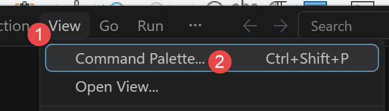
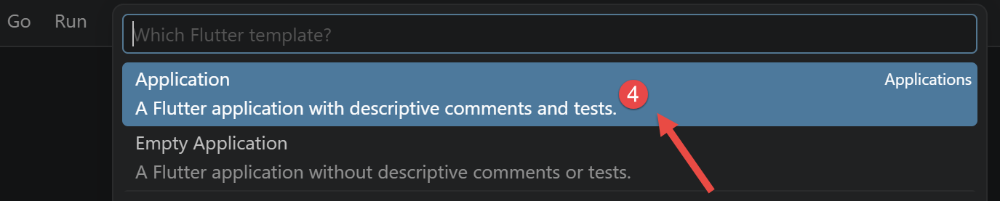
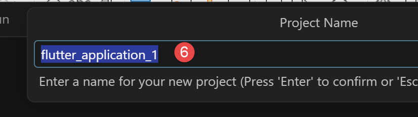
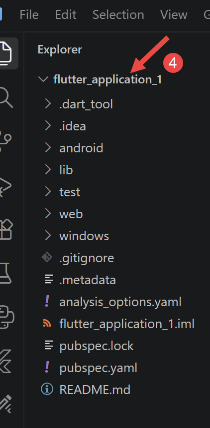
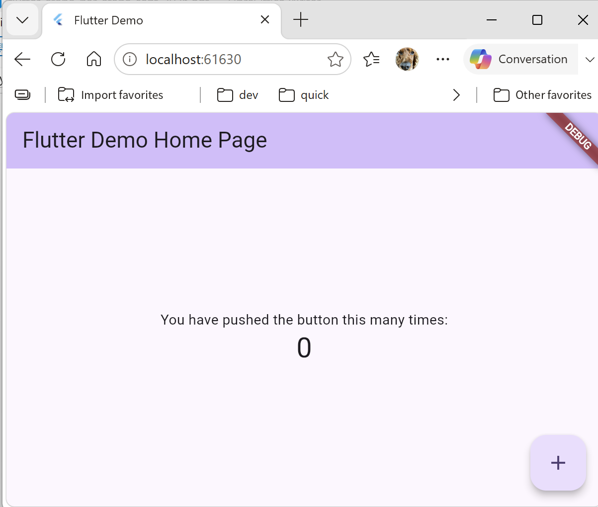
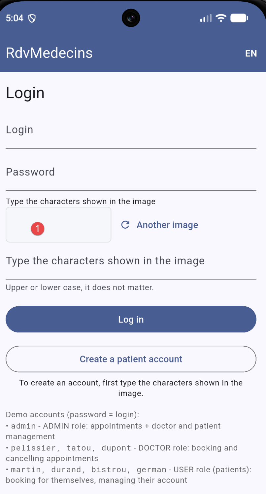

2. Configuración del entorno de trabajo
2.1. Instalación de las herramientas
-
Node.js: descargue e instale la versión 22 (o posterior) desde nodejs.org. Verifique la instalación en una terminal:
-
Visual Studio Code (VSCode): disponible para descarga gratuita en code.visualstudio.com. Instale la extensión [Flutter] (que también instala la extensión [Dart]).
-
[MySQL] 8: instálelo, por ejemplo, mediante XAMPP, Laragon (en Windows), o directamente mediante [MySQL] Community Server. Una herramienta gráfica de administración (phpMyAdmin, [MySQL] Workbench, DBeaver, HeidiSQL…) facilita el proceso. En lo sucesivo se utiliza la herramienta Laragon.
2.2. Instalación del cliente Flutter
Inicie VSCode sin especificar un proyecto:

- En [1-2], abra la paleta de comandos;

- En [3], cree un nuevo proyecto Flutter;

- en [4], cree una aplicación;

- En [5-6], especifique una carpeta donde se creará la subcarpeta del proyecto;

- en [6], asigne un nombre al proyecto. Este será también el nombre de la carpeta creada para el proyecto;

- En [1-3], especifique los destinos del proyecto en [1 – aplicación Android, 2 – aplicación de escritorio, 3 – aplicación web];

- en [4], el proyecto creado. VSCode descarga automáticamente el SDK de Flutter;
El comando [flutter doctor] verifica que todo lo que [Flutter] necesita esté en su lugar, destino por destino. Ejecútelo en una terminal de VSCode del proyecto Flutter recién creado:
Cuando todo es correcto, se obtiene un resultado como este (los números de versión pueden variar):
Cada línea comienza con un símbolo: [√] (todo está bien), [!] (advertencia: falta un elemento, lo que no impide necesariamente que el código funcione) o [X] (error). Para este curso, las líneas relevantes son [Flutter], [Android toolchain] (compilación para un teléfono), [Android] y [Connected device] (al menos un dispositivo detectado, en concreto el teléfono). Las líneas [Chrome] (destino web) y [Visual Studio] (destino Windows) se aplican solo a esos destinos: un [!] o un [X] en un destino que no se utiliza puede ignorarse.
Si [Android toolchain] informa “cmdline-tools component is missing”, instale [Android SDK Command-line Tools] (véase más adelante); si informa “Android license status unknown”, acepte las licencias (paso 5). El comando [flutter doctor -v] proporciona detalles sobre cada verificación.
Ahora, liste las aplicaciones (dispositivos) reconocidas por Flutter:
En la columna 2 se encuentran los identificadores de los dispositivos reconocidos. Para lanzar la aplicación Flutter en uno de ellos:
Por ejemplo, para lanzar la aplicación [flutter_application_1] en el navegador Edge:
El siguiente resultado aparece en el navegador Edge:

A continuación describiremos cómo instalar las herramientas para el desarrollo en Android.
2.3. Android Studio y las herramientas de línea de comandos de Android
El dispositivo de destino de este curso es un teléfono [Android]. Para compilar la aplicación e instalarla en este teléfono, [Flutter] requiere el SDK de [Android], que se instala junto con [Android Studio], el entorno de desarrollo de Google. [Android Studio] no se utiliza para escribir código (el editor sigue siendo [VSCode]); aquí se usa únicamente para instalar y actualizar el SDK de [Android].
- [Android Studio]: descárguelo gratis desde [https://developer.android.com/studio] y luego instálelo. Al iniciarlo por primera vez, el asistente ofrecerá una instalación estándar: acéptela y descargará el SDK de [Android].

- Abra el [SDK Manager] desde [Android Studio] (el menú [Tools / SDK Manager] cuando hay un proyecto abierto, o [More Actions / SDK Manager] desde la pantalla de inicio): es la herramienta que instala y actualiza los componentes del SDK de [Android].
- [SDK Platforms] pestaña: verifique que esté instalada una plataforma [Android] reciente (la documentación de [Flutter] indica la versión 36 en el momento de escribir este texto).

- [SDK Tools] pestaña: marque [Android SDK Command-line Tools (latest)], [Android SDK Build-Tools] y [Android SDK Platform-Tools] (así como [Android Emulator] si desea probar en un emulador) y luego haga clic en [Apply]. La documentación de [Flutter] también recomienda [CMake] y [NDK (Side by side)]. Son los paquetes de [Android SDK Command-line Tools] los que faltan cuando [flutter doctor] muestra “cmdline-tools component is missing”.
- Acepte las licencias del SDK de [Android] ingresando el siguiente comando en una terminal dentro del proyecto Flutter y respondiendo “[y]” a cada pregunta hasta ver el mensaje “All SDK package licenses accepted.”:
[Note]: con la versión 23.0 de [Android SDK Command-line Tools], el comando anterior puede terminar de inmediato, sin solicitar nada, mostrando “The --licenses option is no longer needed.” Se trata de un problema conocido de [Flutter] (issues 191558 y 191487 en github.com/flutter/flutter). Solución alternativa: en [SDK Manager], [SDK Tools] pestaña, marque [Show Package Details], reemplace la versión 23.0 de [Android SDK Command-line Tools] por la versión 22.0, haga clic en [Apply], y luego vuelva a ejecutar el comando.
2.4. Configuración de un emulador de Android
Si no tiene un teléfono, puede probar la aplicación en un emulador [Android]: un teléfono virtual que se ejecuta en una ventana de su computadora. [Android Studio] instala el programa [Android Emulator] (si estaba marcado en el [SDK Manager], véase más arriba), pero no proporciona un dispositivo virtual listo para usar: es necesario crear uno.
- [Prerequisite]: la virtualización debe estar habilitada en el [BIOS] de la computadora y, en [Windows], debe estar marcada la característica [Windows Hypervisor Platform] ([Control Panel / Programs / Turn Windows features on or off]), lo que requiere reiniciar. De lo contrario, el emulador no se iniciará o será muy lento.
- Abra el [Device Manager] desde [Android Studio]: [More Actions / Virtual Device Manager] desde la pantalla de inicio, o [Tools / Device Manager] cuando hay un proyecto abierto (según la versión: [View / Tool Windows / Device Manager]).

- Haga clic en [Create Device], seleccione una plantilla (por ejemplo, [Pixel 8]) y luego [Next]. Seleccione una imagen de sistema [Android] reciente para el procesador [x86_64] y descárguela con el enlace [Download] que aparece junto a ella; después, [Next] y [Finish].


- Inicie el emulador con el botón [Play] del [Device Manager]:

- Espere a que aparezca la pantalla de inicio de [Android] en la ventana del emulador: el primer arranque puede tardar varios minutos. Luego verifique que [Flutter] reconozca el emulador, que debería aparecer en la lista (por ejemplo, [emulator-5554], plataforma [android-x64]):
[Note]: si [flutter devices] no muestra el emulador sino el mensaje “Device emulator-5554 is offline”, el emulador no ha terminado de iniciarse o [adb] (la herramienta que conecta la computadora con el dispositivo, instalada junto con [Android SDK Platform-Tools]) se encuentra en un estado inconsistente. Pruebe lo siguiente en orden: (1) espere a que aparezca la pantalla de bienvenida y vuelva a ejecutar el comando; (2) reinicie [adb] con los tres comandos siguientes (en [Windows], dentro de [PowerShell]), de modo que el último muestre “device” en lugar de “offline”; (3) en el menú [Device Manager] del dispositivo ([⋮]), seleccione [Cold Boot Now], o incluso [Wipe Data] como último recurso.
Si el problema persiste, utilice [where.exe adb] para verificar que no haya otro [adb], de una versión diferente, en el [PATH]: dos versiones de [adb] que compiten por la conexión causan este problema.
Una vez reconocido el emulador, la aplicación se lanza en él con el siguiente comando (véase la sección “Instalación y ejecución”):

Preparación del teléfono Android
Para ejecutar la aplicación en un teléfono [Android] real, el teléfono debe configurarse para permitir el control desde la computadora:
- Habilite las opciones de desarrollador: abra [Settings / About phone] y toque varias veces [Build number] (normalmente 7) hasta que el teléfono indique que usted es desarrollador. Los nombres exactos varían según el fabricante.
- Habilite la [USB debugging] en el menú [Developer options] (agregado en el paso anterior).
- Conecte el teléfono a la computadora con un cable USB que transfiera datos (no que solo cargue el teléfono) y acepte en el teléfono la solicitud de autorización de depuración USB. En Windows, si el teléfono no es reconocido, instale el controlador USB del fabricante (“OEM USB drivers”, véase [https://developer.android.com/studio/run/oem-usb]).
- Verifique que [Flutter] pueda detectar el teléfono: debe aparecer en la lista que muestra el siguiente comando, junto con la plataforma [android]:
El teléfono accederá al servidor [NestJS] mediante la dirección IP de la computadora en la red local (no mediante [localhost]): esta configuración se describe en el capítulo 5.